Smart Leads Platform
Led the product vision from concept to market, delivering 7× ROI for clients.
In 2024, I led the end-to-end design of an interactive web platform for Mastercard, converting complex transaction data into a scalable, production-ready digital product. Chosen for launch due to its scalability and technical feasibility, the platform was rolled out across 7 countries in 4 regions.
Time - Dec 2023 to Jan 2024
My role - Senior product designer along with 1 PM, 3 analysts and 1 design lead.
The opportunity
Just as Google Maps guides travelers, banks need a unified financial map of small businesses to deliver personalized services.
Why not Google Map? App services like Google Map aren't able to provide any finance information.
The solution
Mastercard Smart Leads is an intuitive, interactive platform delivering timely SMB financial insights for global banks.

Hot Area Bank sales teams can easily identify economically active areas using Mastercard transaction data. The platform provides a holistic view of regional economic prosperity across sectors, geographies, and timeframes.
Hot Merchant Banks can identify high-value merchants based on economic indicators. Users can drill down from the national level to postal district level to pinpoint locations for potential merchant partnerships.

Finance Panel Banks can access Mastercard’s comprehensive area-level financial data, including the number of merchants, transaction volumes, and gross dollar value (GDV).

The project team needs strong designs that package data technology and assets in ways that address urgent market needs.
Banks are seeking answers to high-stakes, multi-million-dollar questions. By leveraging Mastercard payment data, they can understand the financial health of SMB owners and shape a data-driven strategy. Me and my design manager partered with a product owner to translate this capability into a seamless user experience.

Onboarded Clients
Launched Market
United Kingdom, United States, Brazil, Australia, Canada and more to come
Client Feedback
Smart Leads is by far the most valuable third party data solution we have ever invested in. -- VP Strategy, Major Global Acquirer

The context
Mastercard is lagging behind in Acquiring Bank market share
In the acquiring bank market, Mastercard trails its main competitors in market share. To address this gap, the product manager proposed a digital product that delivers direct value to acquiring banks by solving a long-standing pain point. Early market research revealed that acquirers often struggle to understand merchants’ financial health and lack clear guidance on which merchants to pursue. This presented a strong opportunity to build a product that standardizes how banks identify and prioritize high-potential merchant prospects.
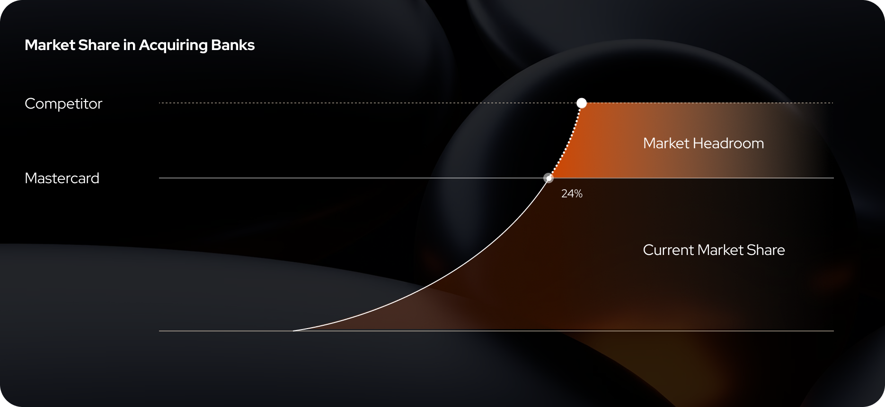
Product strategy
Design a platform that provide direct value to acquiring banks
Unlike other pilot initiatives, limited access to acquiring-bank stakeholders made user research challenging. Without established relationships, the team was unable to identify interview participants or conduct in-depth research. To address this constraint and increase the likelihood of successful bank partnerships, the business and product teams pursued three parallel product directions. The effort was highly collaborative, with teams aligned through weekly progress sharing and ongoing cross-support.
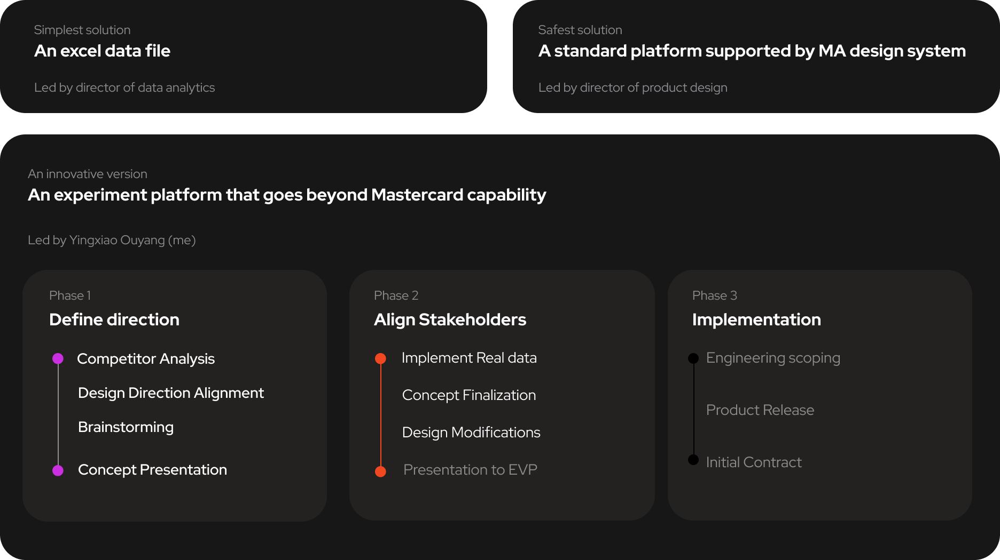
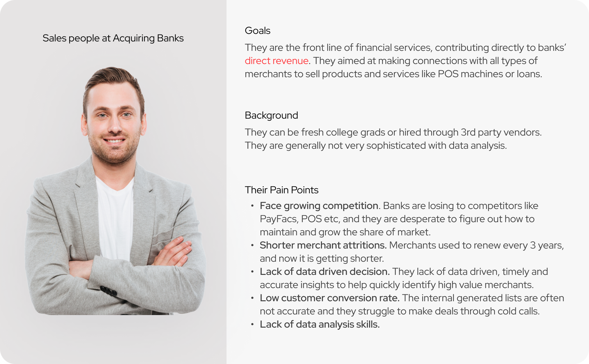
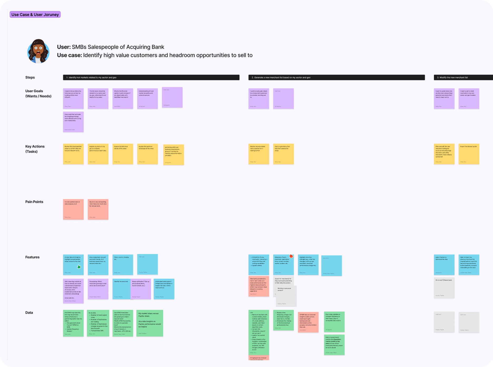
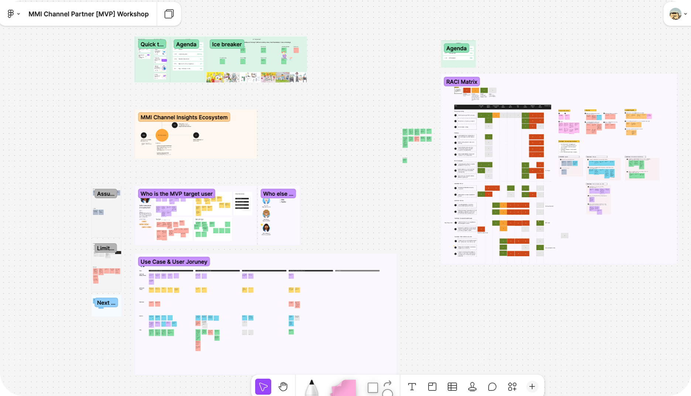
Market trends
To understand how the market defines innovation, I examined the Information is Beautiful Awards, one of the industry’s leading design awards. I then categorized the submissions into two distinct types.
1. Visually Appealing Solutions
100 days of protests rock Hong Kong
South China Morning Post
Rough justice
Australian Broadcasting Corporation
Abandoned at sea
Kontinentalist
2. Intuitive User Experience
MTA Ridership Change
Aucher Serr, Two-N
Metroverse - The Growth Lab’s Urban Economy Navigator
The Growth Lab at Harvard Kennedy School
Swimming records: a competition of speeds
Irene de la Torre Arenas (Author)
Anatomy of the Lismore disaster
The Visual Stories Team and Heath Gilmore
1812: When Napoleon Ventured East
TASS Russian News Agency

Health Care Spending in North Carolina
Social Media Clicks
Discover the gap
I conducted a design critique of the standard version my design director was developing, identifying opportunities to create a more innovative product while retaining the core features. Based on these insights, I brainstormed multiple directions and selected the four most promising concepts. Ultimately, my design director chose the fourth concept—a dark-themed platform featuring merchant visualizations.
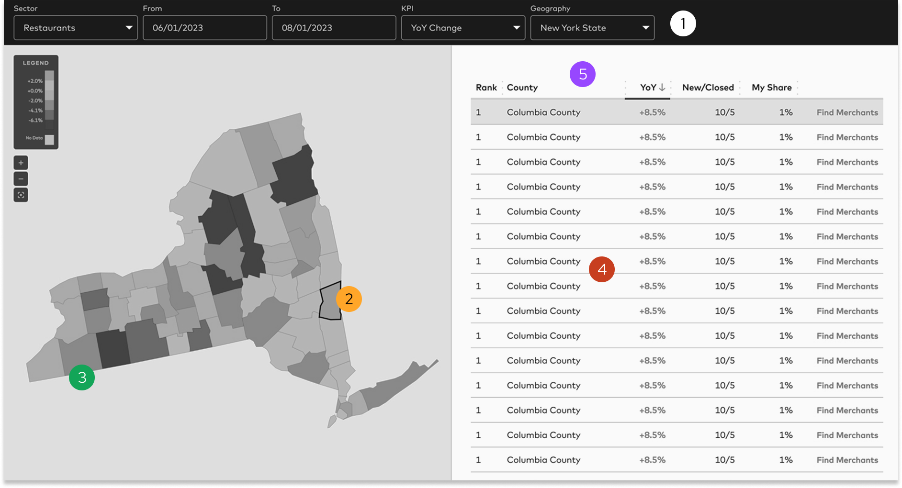Define innovation
After ideation, I set three guiding design principles that aligned engineering effort, visual aesthetics, and usability, shaping the direction of the entire design.
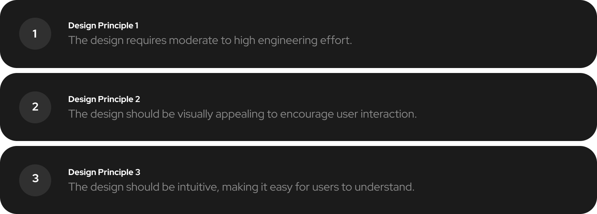Sell the concept
For my first presentation to the VP of Product, I refined the concept using user stories, further defining features and strategies to guide users through each step of their journey.
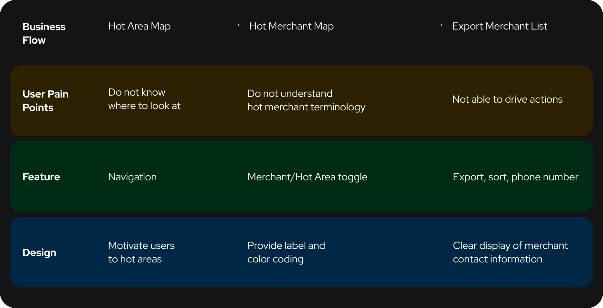I presented two key screens showcasing the dark theme concept, which enabled multi-area selection and visualized merchant locations. The concept was immediately approved, with the VP highlighting its strong user value—multi-area selection and location insights directly addressed feedback from prior user conversations. The high-contrast map was also encouraged as a promising direction to further enhance clarity and usability.
Represent geography accurately
Build map repo
Although the VP of Product approved the direction, the platform also needed to showcase the breadth of available datasets. Reviewing a raw Excel file from the Director of Analytics, I was struck by the volume of data users could access. A key challenge was accounting for different postal code formats—for instance, the UK’s areas, districts, and sectors. To ensure geographic accuracy, I researched international formats, built a map repository, and enabled users to identify locations at their preferred level of granularity.
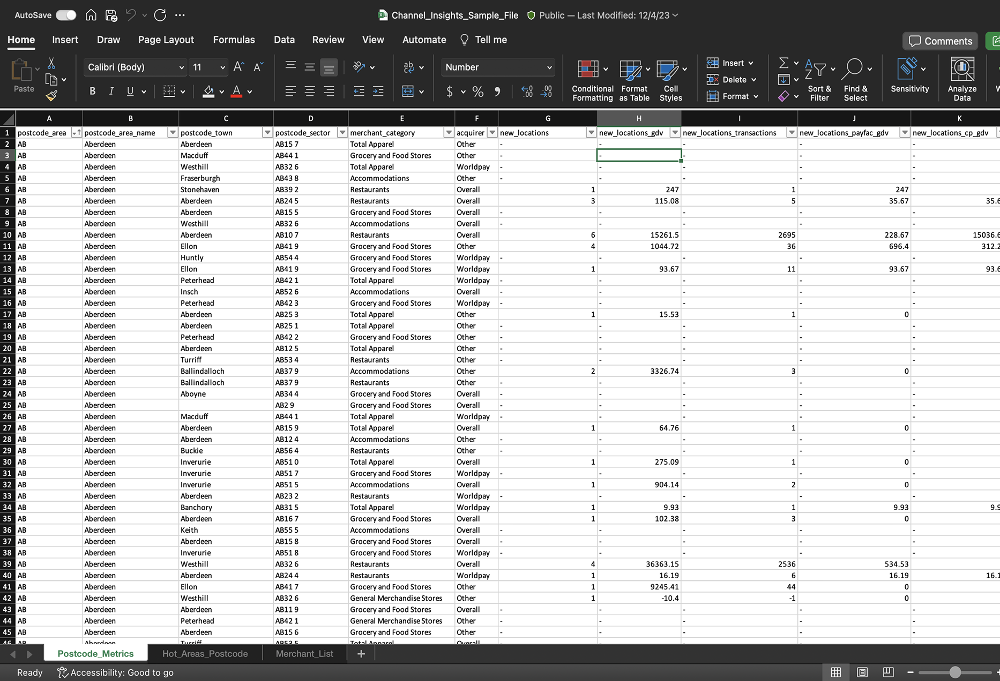
Package data assets
Display diverse data clearly and concisely.
I streamlined the user journey to help non-technical users explore Mastercard’s extensive datasets through key use cases. Instead of presenting 28 raw datasets, I reorganized and renamed them in the side panel, making it easier for users to navigate and access the information without feeling overwhelmed.
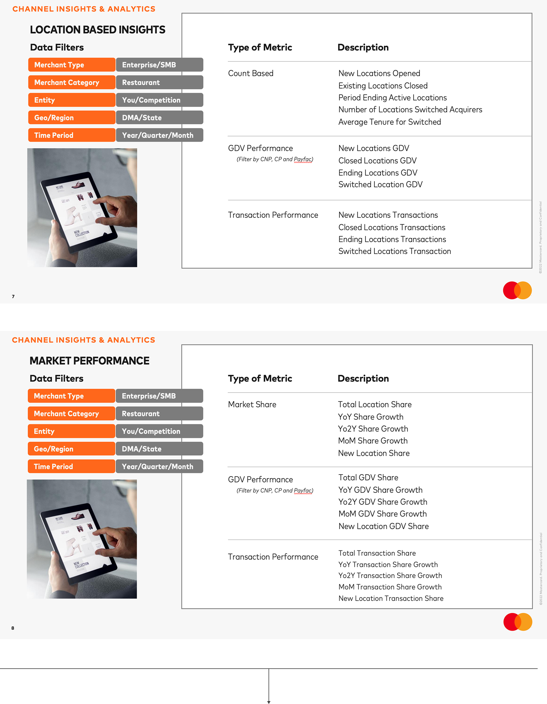Protect user privacy
One key design challenge was balancing usability with privacy. Ideally, bank sales teams could directly identify and contact high-value merchants; however, such a user-friendly flow is restricted by law to protect merchant privacy. Even with an optimized approach, we received strong pushback from Legal, as Mastercard is prohibited from disclosing any data related to an individual merchant’s performance. Beyond individual flows, strict PDP regulations also apply to aggregated, area-level financial data, preventing acquiring banks from reverse-identifying merchants.

Legal requirements prevented the release of the merchant scoring feature.
Another key concern raised by the Legal team involved the visualization of merchant locations. Although merchant markers were intentionally designed to be non-clickable, the underlying algorithm used to display merchant financial status could still pose privacy risks. As a result, this feature was not approved for release, despite being one of the most highly requested capabilities during usability testing. This constraint required us to rethink how value could be delivered without exposing sensitive merchant data.”
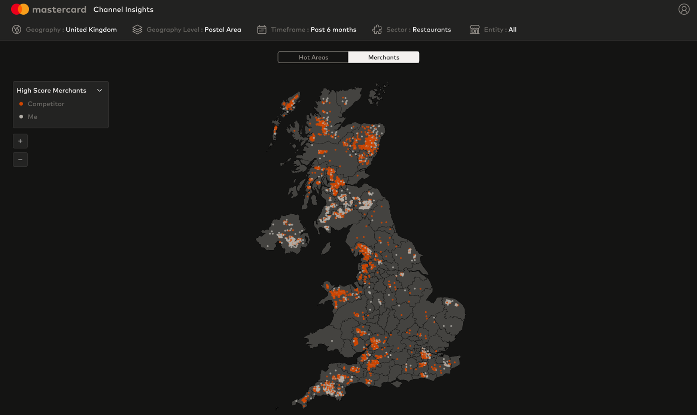Pioneer Dark Theme
Build a dark design system to achieve the maximum consistency
As the design evolved, the original dark theme became visually cluttered. I refined the design system by introducing clearer color coding across surfaces and buttons, ensuring a consistent visual hierarchy and improved clarity.
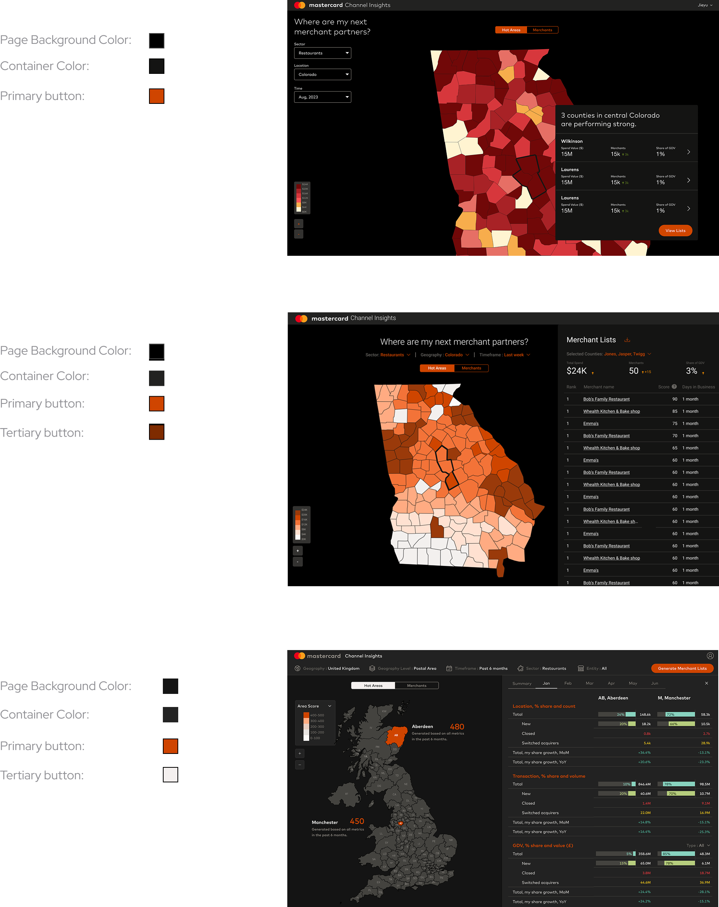Improve Data Color Coding
Refined the heatmap to better highlight high-interest areas
The map served as a primary navigation tool, guiding users toward economically prosperous areas. To improve users’ ability to identify promising merchants, I refined the heatmap color coding to emphasize hotspot regions—providing both a national overview and clear visual cues for action.
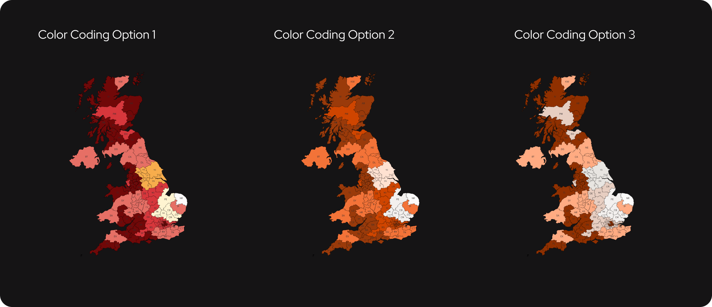Socialize the product
The prototype won great attention from executives, engineering team and top tier
These capabilities generated strong momentum across both internal stakeholders and external clients. The prototype was successfully demoed to three major acquiring banks, quickly securing buy-in around its business value and ease of use. Engineering moved into rapid execution, culminating in a full product launch in early 2025.
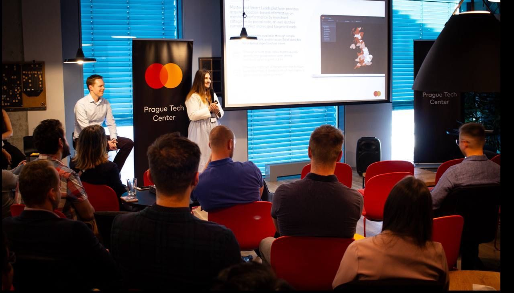Design Quality Testing
Following the Studio Design Framework, the prototype was tested on the Wevo platform, scoring 77 overall with particularly high marks for efficiency. Testing revealed key insights: reactions to the dark theme were polarized, with half of users requesting a light theme option, and several suggested integrating the tool with Salesforce. Feedback on the datasets was mixed—some users felt overwhelmed, while others wanted access to more data—highlighting opportunities to better balance clarity and comprehensiveness.

Commercial Success
Upon its launch, the product has been receiving great customer feedback, with new deals closed with acuqriing banks. Highlights for one of the core clients revealed that a 0.1% increase in their merchant base (just 4,000 new signups) = $4.8M in additional annual revenue. That is a 7xROI on their investment in this product. They would love the further expand the service across U.S. UK, Canada, Ireland, and France.
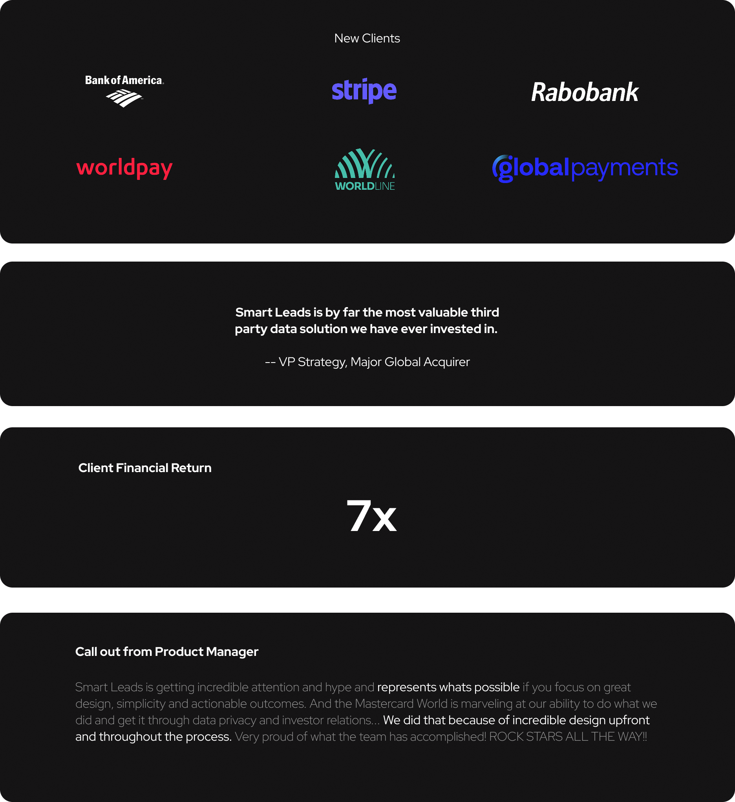A few more followups
After the project concluded, I was invited to join Mastercard’s Dark Theme team to pioneer an official dark theme across the company. We updated company-wide design tokens and color systems, enabling all design teams to implement dark themes consistently and efficiently.
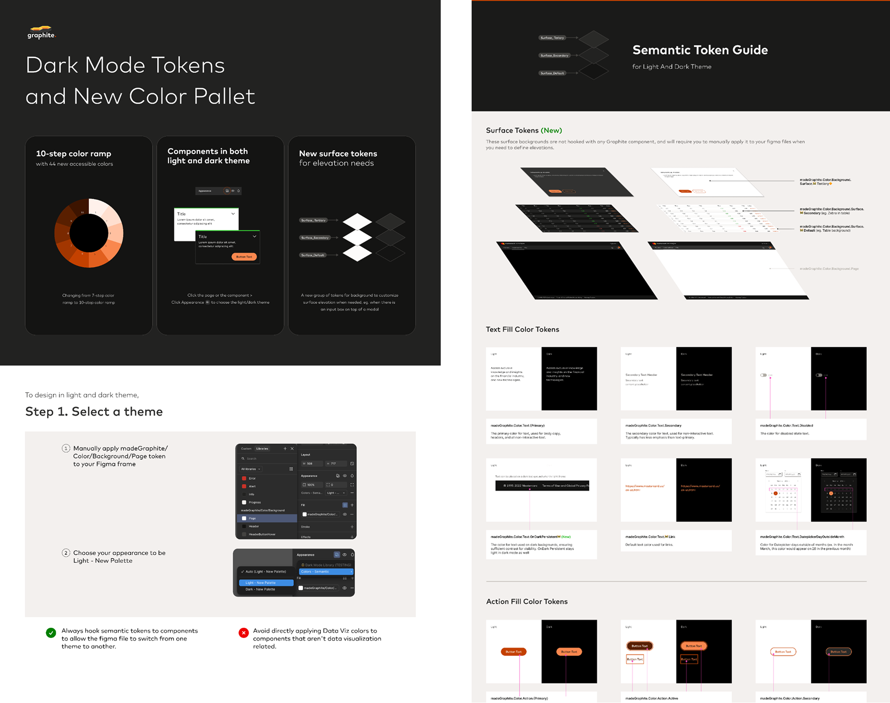As the product went global, I contributed to a follow-up project mapping the user journey based on real client feedback. Insights revealed that users include both sales teams and data strategy teams, who track not only store openings and closures but also ‘business-as-usual’ activity. Banks also prioritized merchants nearing renewal within six months to drive retention.
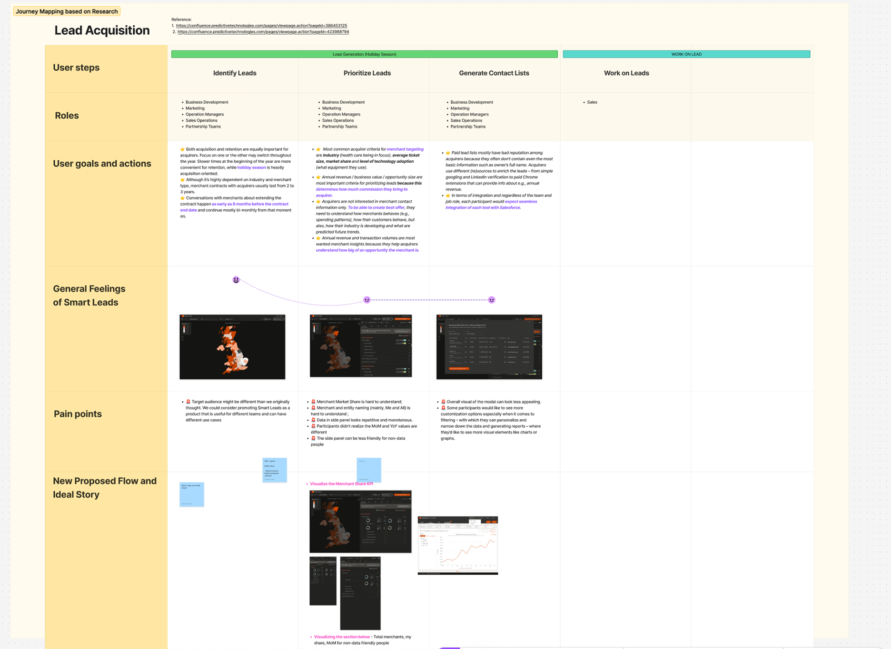Reflections from Yingxiao
This project was personally meaningful because it demonstrated how user-focused innovation drives client impact. By solving real user problems, the product gained recognition and contributed to empowering experts in their work. It reminded me that even enterprise tools come to life when designed around the people using them.
To discuss this case study with me, feel free to send an email to lunaatlgt@gmail.com